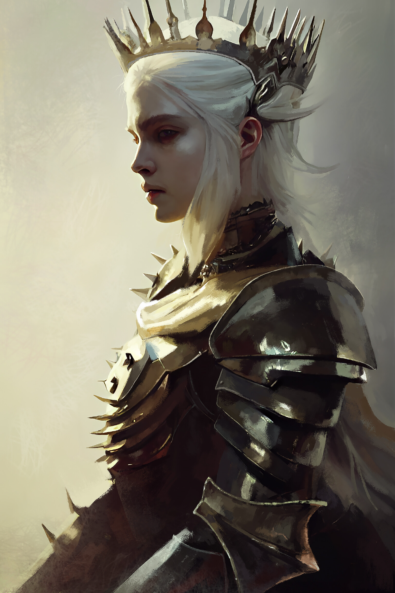

Mother of Dragons

She is my favorite character from the HBO series, "Game of Thrones." She is one of the few characters that stay with us from season 1 to season 8. She starts out as a timid girl who doesn't know her place in the world. However, because of the things that happen to her, she is able to grow more confident in not only herself but also her abilities to do what is right. Her story line is very strong and compelling. Each time you see Daenerys on screen, you'll always be excited. You'll want to know what is in store for her character and what she'll do about the situations.
The action scenes with her are amazing. Each shot is exciting and will keep you on your toes. I recommend watching Game of Thrones to fully understand my love for a strong female lead.